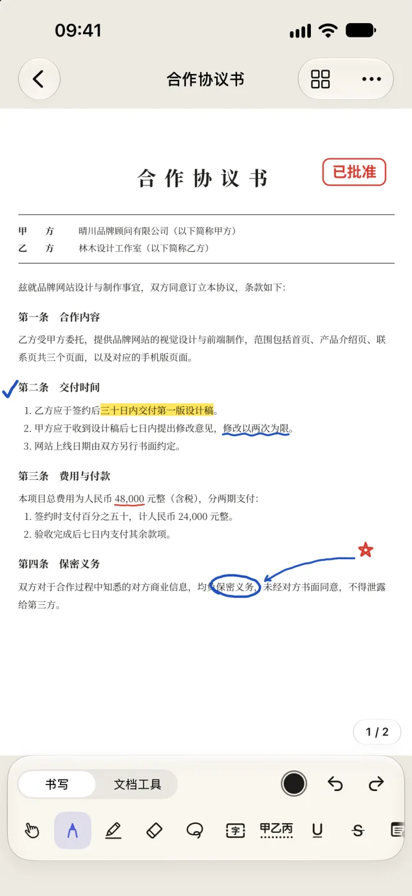
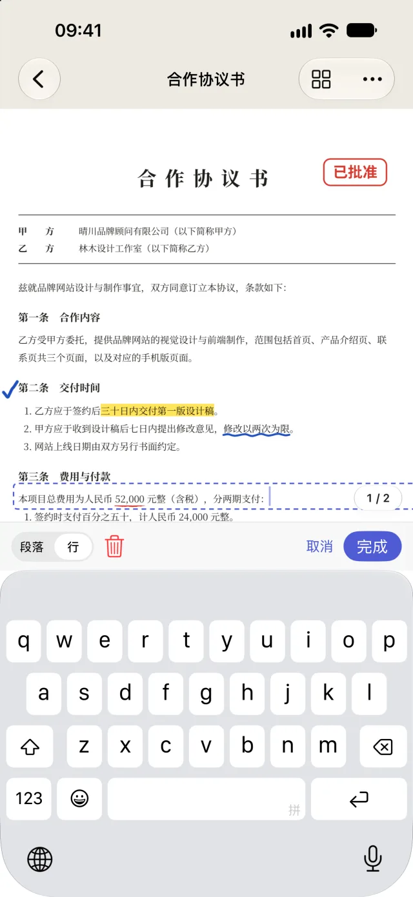
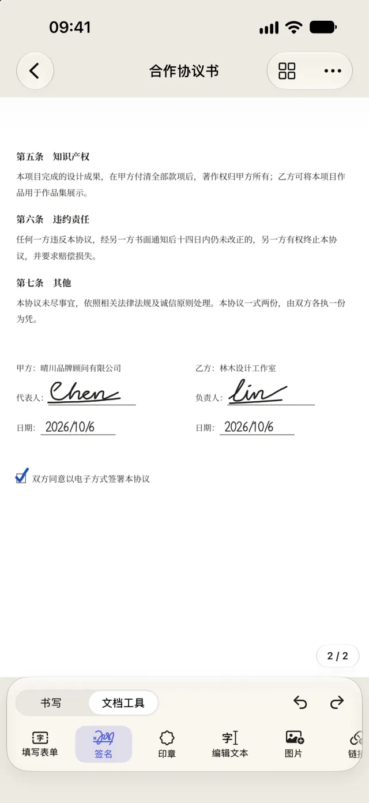
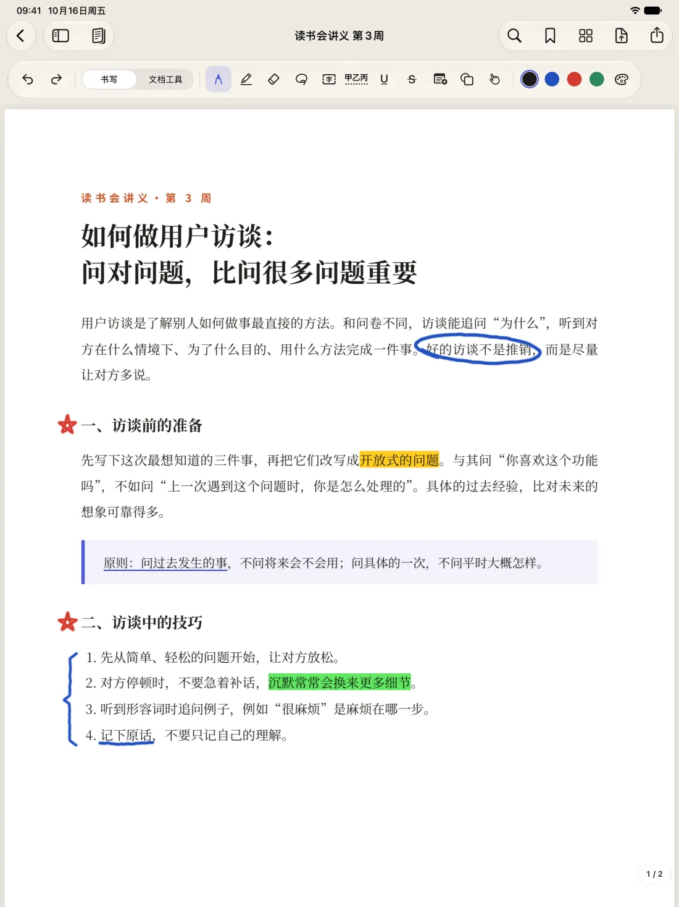

签名
用手指或 Apple Pencil 签名，存起来下次轻点一下就能放上。需要更正式的，可以用数字证书签名，并加上时间戳。
iPhone · iPad · Mac
也像专业软件一样，什么都改得动。
Folium 把处理 PDF 会用到的工具都放在一起：手写笔记、签名、填写表单、直接改字、扫描，再到转换成 Word 和 Excel。全部在你的设备上完成，文档不会离开你手上。
日常的 PDF 琐事
不必在三四个 App 之间来回倒腾文件。打开 PDF，要写、要签、要改，都在同一个地方完成。
用手指或 Apple Pencil 签名，存起来下次轻点一下就能放上。需要更正式的，可以用数字证书签名，并加上时间戳。
有字段的表单直接填。扫描来的、没有字段的表单，Folium 会找出格子、下划线和复选框，让你一格一格填好。
看到错字，轻点一下直接改，不必回头去找原来的 Word 文件。也能替换图片、插入图片、添加一段文字。
笔、荧光笔、文本框、备注、形状、印章，想怎么画就怎么画。画完停一下不松开，线条、箭头、圆形、矩形会变工整。在 iOS 27 及更高版本上，手写笔记也能搜索。
用相机把纸质文件扫描成 PDF。识别文字之后，扫描件也能搜索、选择、拷贝文字。
排序、旋转、删除、插入、合并，或从另一份文档拷贝几页过来。在 iPad、Mac 上，把 PDF 或图片拖进来，就能插入为新页面。
还有转换成 Word 和 Excel、Office 转 PDF、永久涂黑、密码与权限、页码与水印、裁剪页面、比较两份文档、压缩文件、批量处理与快捷指令。
实际界面
以下都是 Folium 的实际界面截图。




资料库
用文件夹分类，用标签标出“待签”“已完成”，搜索时连 PDF 里的文字一起找。文件夹就是 iCloud 云盘里真实的文件夹，在“文件”App、访达里看到的分类也一样。
文件夹里可以再放文件夹。拖过去，或从菜单里选择“移到…”，都能一次移动好几份。删除文件夹时，里面的文档会移到上一级，不会跟着消失。
一份文档可以有好几个标签，共七种颜色。轻点一个标签，所有文件夹里带有这个标签的文档都会列出来。
搜索时，PDF 里的文字、识别过文字的扫描件、你添加的文本框和填进去的字，都会一起找。轻点搜索结果，直接打开到那一页。
在 Mac 上可以切换成列表，按名称、修改日期、页数、大小排序，按 ⌘F 马上搜索。刚导入、还没整理的文档，都在“未分类”里等你。
文件夹、标签、搜索，都是免费的。
三个平台
手机上最常做的事最顺手：签名、填表、快速标注、改一个字，马上发回去。
用 Apple Pencil 写笔记、批改、画重点；两份文档并排，一边看一边写。
为 Mac 设计的菜单、键盘快捷键与多个窗口。从访达打开 PDF 直接改，自动存回；大量转换格式、合并也更快。
文档通过你自己的 iCloud 同步；Folium Pro 一次购买，三个平台都能用。
隐私
Folium 不收集、不上传、不共享你的个人数据，也不记录你用了哪些功能。
打开就能用。没有广告，没有分析工具，也没有任何跟踪。
文字识别、手写识别、格式转换、改字，全部在你的 iPhone、iPad 或 Mac 上完成。
文档存储在设备上，或你自己的 iCloud 云盘里。开发者看不到你的文档。
只有数字签名的时间戳与证书查询会联网，发送的是哈希值与证书信息，不是文档内容。
放心改
付费用户最在意的，是文档不能坏、不能丢。Folium 从存储的方式开始，就是为这件事设计的。
导入的原始 PDF 原封不动地保留在文档里。每一步修改都能撤销，也能回到之前存下的版本。
把修改存回原来的文件时，Folium 会逐页比对画面，确认和你看到的一样才写入。
已经有数字签名的 PDF，修改一律追加在文件末尾，签署时的内容一个字节都不动。
同一份文档在两台设备上修改，iCloud 同步时会合并两边的修改，不会直接覆盖其中一边。
方案
不限文档数量，不加水印。
一次买断，永久使用，没有订阅。
一次购买，iPhone、iPad、Mac 都能用，也能通过“家人共享”共享给家人。
就算申请退款，用 Pro 做过的修改也照样能看、能存回原文件、能导出。你的文档不会被锁住。
TestFlight 公开测试
先在 iPhone、iPad 或 Mac 上安装 Apple 的 TestFlight App，再通过下面的链接加入，名额 100 人。测试版里的购买都只是测试，不会真的扣款。
如果链接显示还不能加入，是 Apple 还在审核，过一两天再试。